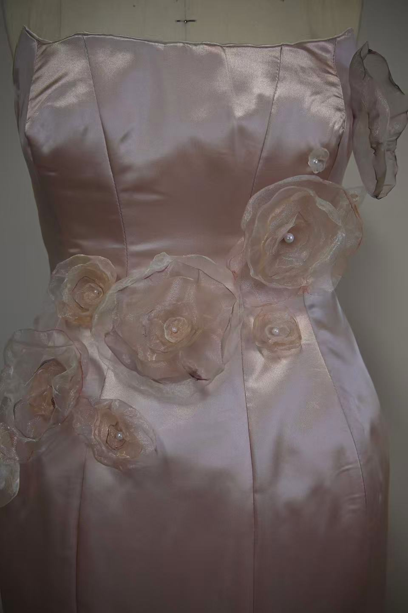
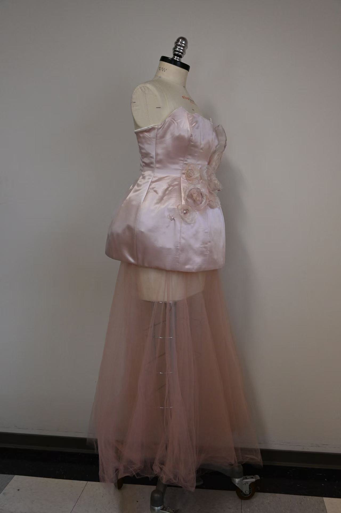
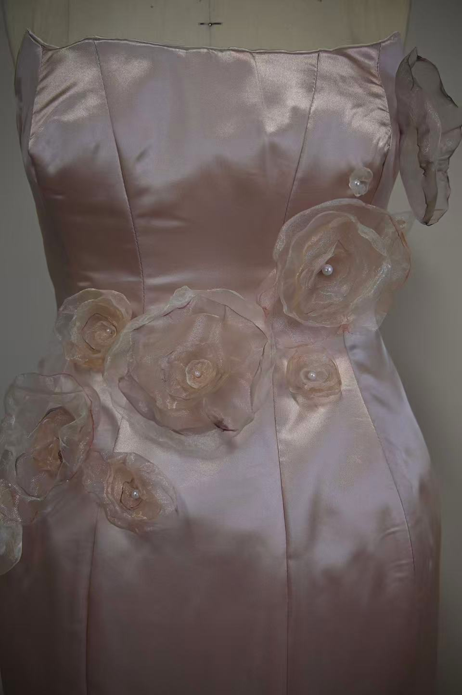
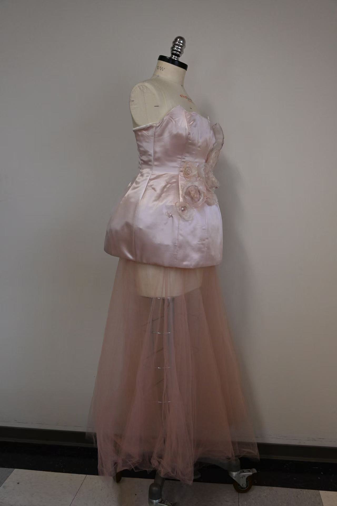
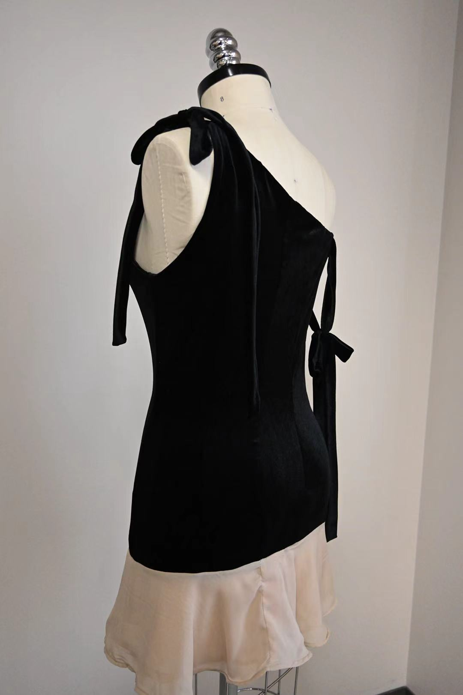
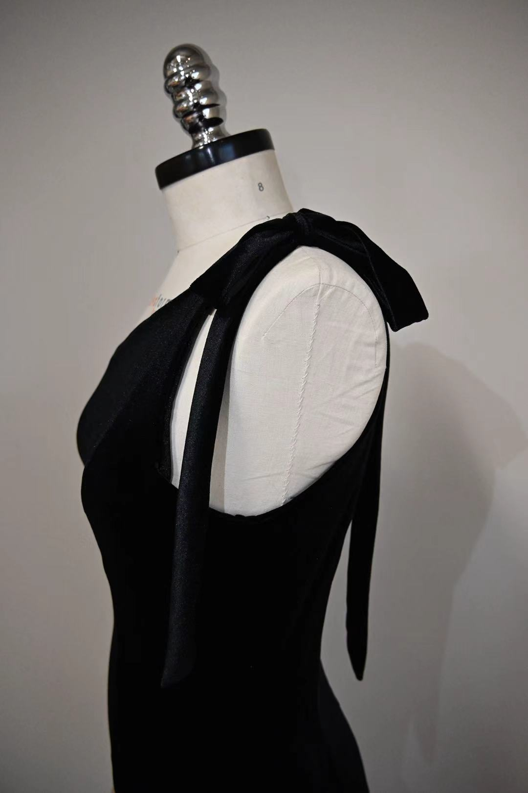
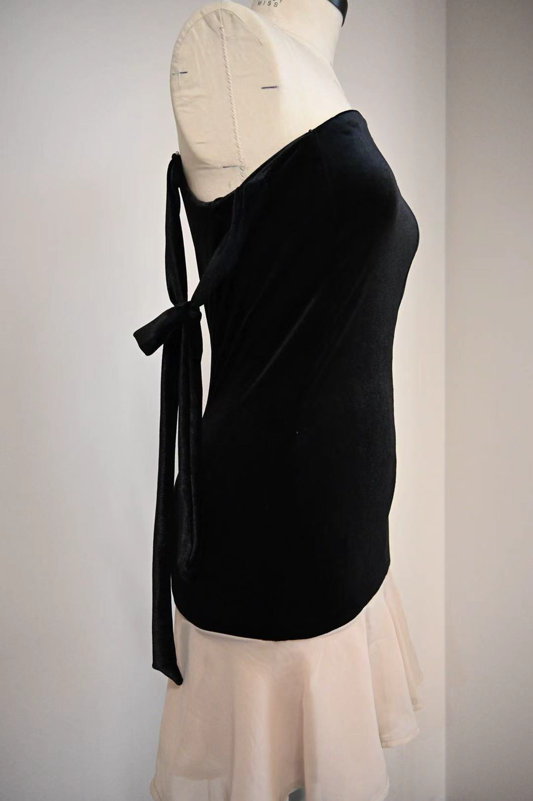
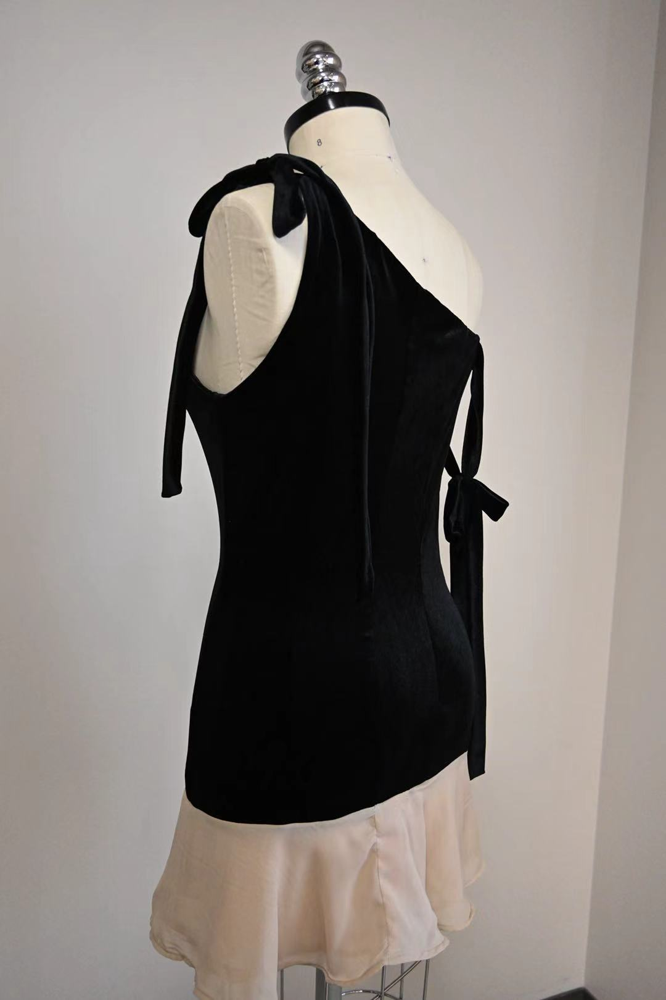
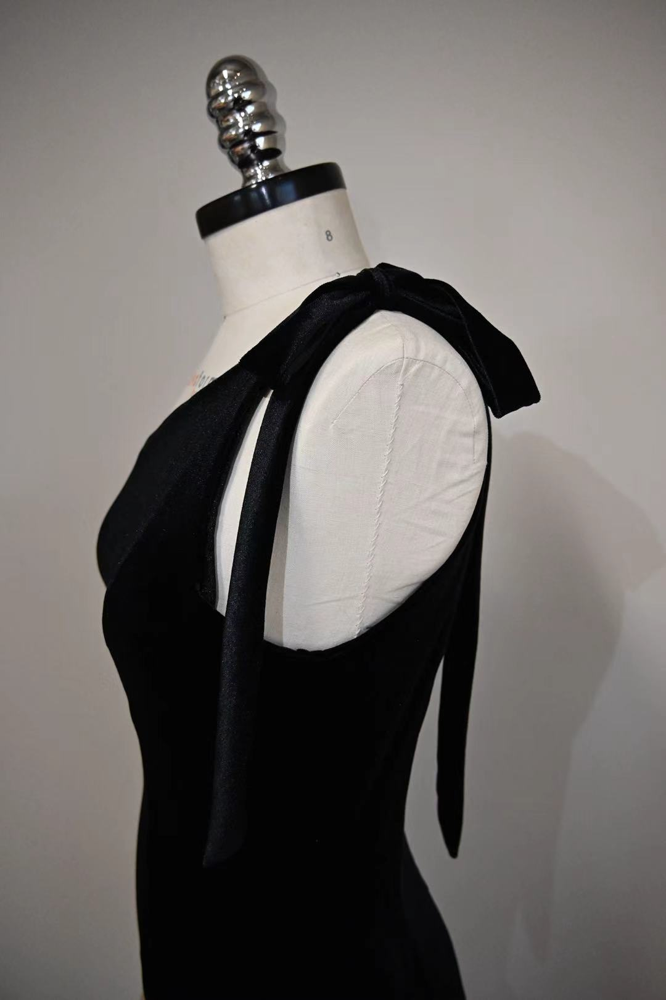
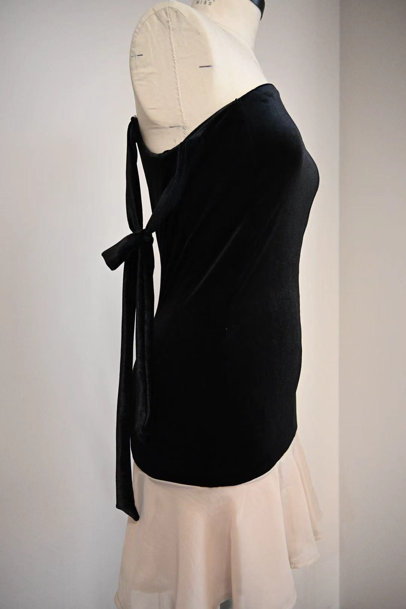

Afternoon Tea Party Gown
This occasional wear look is crafted for an afternoon tea party, inspired by the delicate elegance and blooming beauty of floral gardens. The design features a structured satin corset top paired with a flowing tulle circle skirt, creating a balanced silhouette that combines form and softness. A soft pink palette is used throughout, evoking femininity, warmth, and charm. A standout element of the design is the intricate 3D floral embellishments. These are made through fabric manipulation using organza, which I hand-dyed into a range of pink shades to achieve natural tonal variation. The edges of each petal are melted to mimic the softness of real flower petals. These hand-crafted blooms are placed thoughtfully across the garment, adding depth, movement, and a touch of romantic whimsy. This look captures the spirit of a modern tea party guest—elegant, expressive, and effortlessly graceful
 




